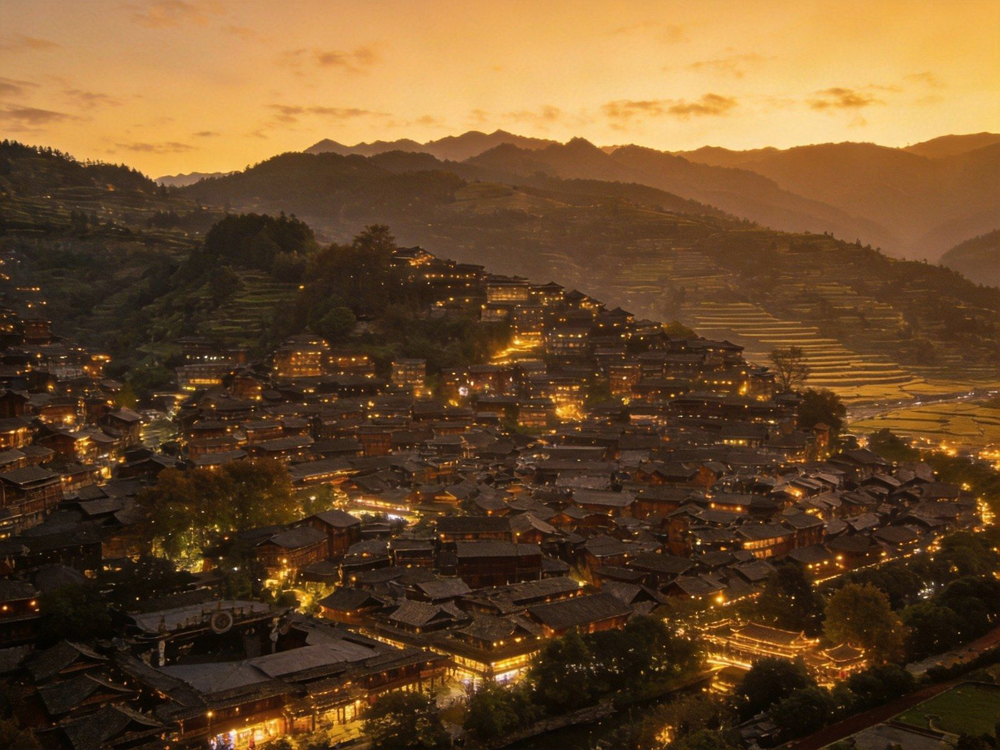
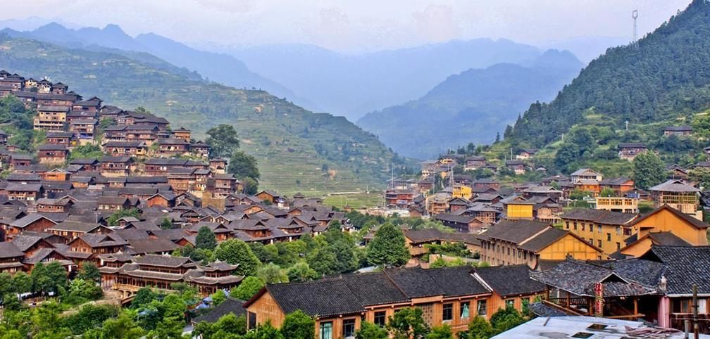
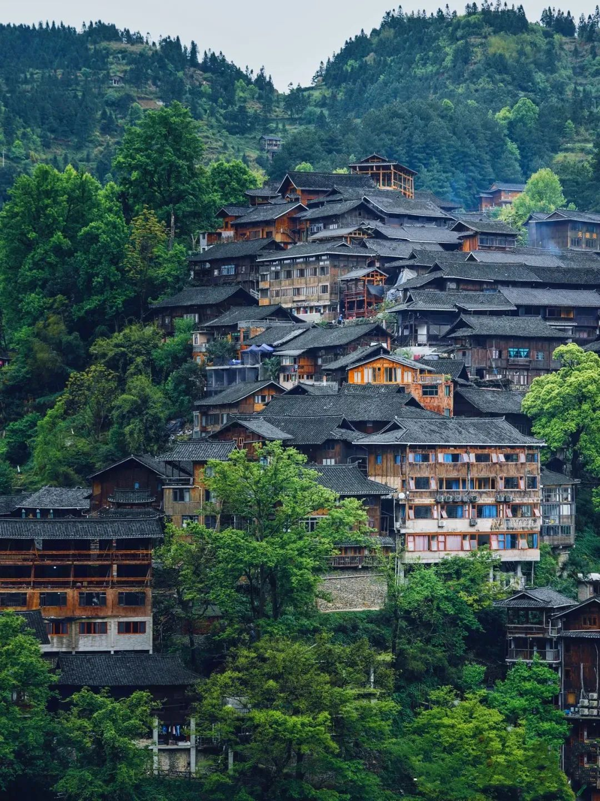
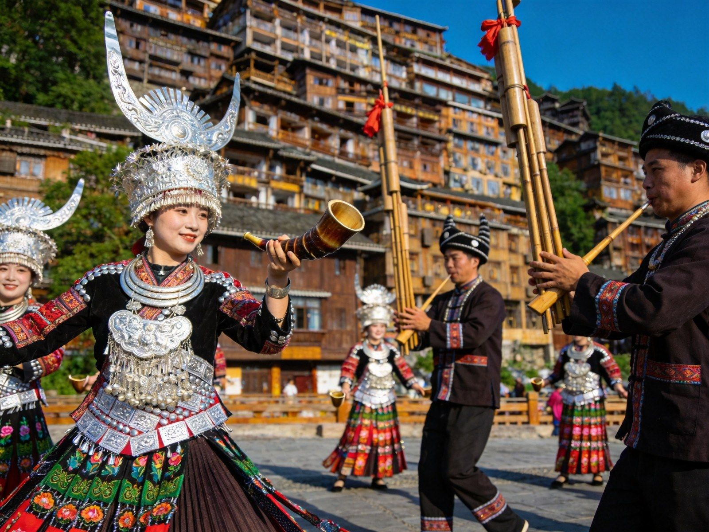
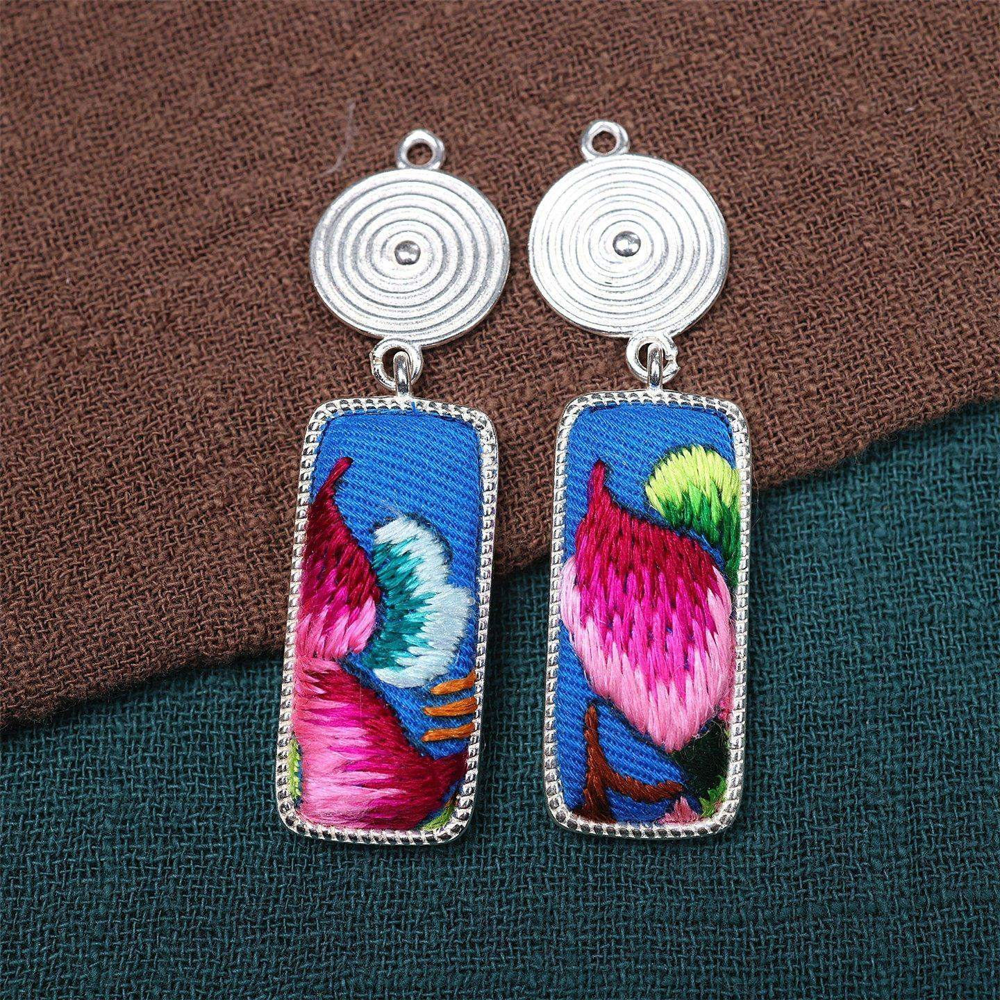
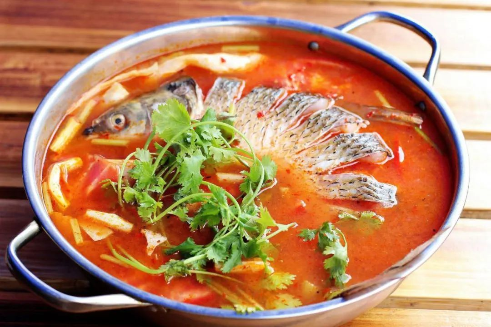
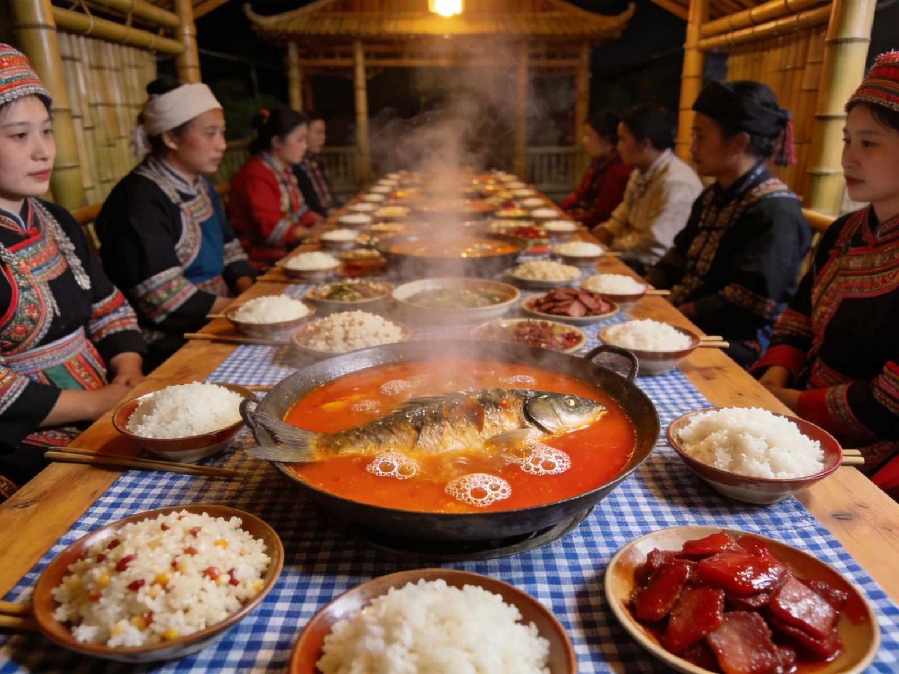

苗乡印象
吊脚楼建筑
苗乡一日
苗族文化
苗家节庆
苗寨美食
行程预算
周边连玩
安全

苗岭深处 · 万家灯火
西江千户苗寨
吊脚楼 · 苗银 · 长桌宴
千户苗寨
吊脚楼
苗银苗绣
长桌宴
苗年节庆
中国 · 贵州 · 黔东南
A5 口袋手册
· 苗乡全攻略
1
/ 10
西江苗寨
中国最大苗族聚居地
为什么去西江
Xijiang Miao Village
千户苗寨 · 万家灯火
世界最大苗族聚居村寨，不容错过的苗岭名片
🏮 为什么非它不可
中国最大苗族聚居地
：1400 余户、6000 多苗民依山聚居
吊脚楼建筑奇观
：半山千栋、层层叠叠，2005 年入选中国历史文化名村
非遗活态传承
：苗银、苗绣、飞歌、蜡染、拦门酒处处可见
万家灯火夜景
：日落灯起，山间灯火如星河，视觉震撼
TIP
门票约 90 元（含摆渡车另计），强烈建议住一晚看夜景与晨雾，才是完整体验。
2
/ 10
西江苗寨
建筑奇观
吊脚楼 · 建筑智慧
Stilt Houses

层层吊脚楼 · 顺山而建
风雨桥 · 跨河而筑
🏗 吊脚楼
依山而建
：半坡悬挑，柱子高低错落如"吊脚"，节省平地又防潮通风
穿斗式木构
：榫卯咬合、不用一颗铁钉，历经百年依然坚固
三层格局
：底层养畜/储物，中层住人，顶层阁楼晾晒谷物
美人靠
：堂屋外挑的靠栏，是苗家姑娘绣花、观景闲聊之地
🌉 风雨桥
村内白水河上风桥相连，兼具通道与休憩，风雨无阻
梁柱彩绘苗族图案，是进寨打卡第一景
TIP
站在观景台看是对角千栋吊脚楼的经典角度，清晨雨后更有层次。
3
/ 10
西江苗寨
苗乡一日
苗岭风情
千户苗寨
观景台·嘎歌古巷·长桌宴·夜景
XIJIANG
📷
观景台
全景
🛖
吊脚楼
穿行
🪶
嘎歌古巷
非遗
🍲
长桌宴
盛宴
🌌
万家灯火
夜景

吊脚楼 · 山城步道

苗银盛装 · 风情
TIP
白天逛村寨、看苗银与苗绣手艺，傍晚到观景台等万家灯火，晚上长桌宴配芦笙歌舞，是最地道的苗乡夜。
4
/ 10
西江苗寨
苗族文化
苗银 · 苗绣 · 歌舞
Miao Culture

苗银 · 苗绣
银饰盛装
💍 苗银工艺
女子盛装从头饰、项圈到手镯环佩叮当，代代手工錾刻
银饰既是装饰，也承载"以重为美、以多为荣"的苗族审美与财富
🪡 苗绣 · 无字天书
以布为纸、以针为笔，飞鸟走兽、云纹图腾讲述苗族迁徙史诗
刺绣、蜡染、剪纸诸艺齐备，是苗族"穿在身上的史书"
🎵 歌舞
芦笙舞
、飞歌高亢悠远，节庆常有反排木鼓舞
拦路酒、高山流水敬酒歌是体验苗家热情最直接的方式
TIP
想深入可逛西江苗族博物馆与嘎歌古巷手工坊，比纯打卡更有温度。
5
/ 10
西江苗寨
节庆 · 拦门酒
苗家节庆 · 拦门酒
Festivals
苗年
农历十月·最隆重
庆祝丰收，家家杀猪打糍粑、走亲访友，盛装踩鼓、芦笙昼夜不断
鼓藏节
十三年一度·祭祖大典
最神圣的祭祖盛典，全寨盛装祭祀"鼓藏"，场面盛大庄严
吃新节
新谷登场·尝新
每年新米成熟时以新米祭拜天地，欢庆丰收
🥂 拦门酒 · 高山流水
进寨常设
拦路酒
，苗妹列队执酒，三碗五碗迎客
高山流水
：层层酒碗叠放如高山流水倾泻而下，须"同心接喝"
酒为自酿米酒，度数不高但后劲足，量力而为
TIP
每年农历十月前后是苗年季，此时上寨最能感受节庆盛况，提前订房。
6
/ 10
西江苗寨
苗寨美食
苗寨味道
Local Food

酸汤鱼 · 苗家头牌

长桌宴 · 苗家盛宴
🐟
酸汤鱼
红酸汤后火锅，番茄发酵酸香，配现切稻花鱼，贵州必点名菜
🍚
糯米饭
竹筒乌米饭/五色糯米饭，软糯回甘，配折耳根蘸水更地道
🥓
苗家腊味
腊肉、香肠、血豆腐，柴火烟熏，配酸菜炒最下饭
🍯
糍粑 · 米酒
手工糍粑沾黄豆粉，苗家米酒微甜顺口，配高山流水敬酒歌
TIP
长桌宴拼桌最热闹，几十人同坐一长桌、边吃边看歌舞敬酒；酸汤鱼可选菜籽油香辣或清汤酸鲜两种锅底。
7
/ 10
西江苗寨
行程与预算
怎么玩 · 怎么到
Plan
西江玩法（元/人）：
① 一日打卡
观景台+村寨+夜景，不含住宿
约 300–450
② 两日深度
+嘎歌古巷+歌舞+长桌宴，住村内看两晚夜景
约 550–750
③ 门票与交通
门票约90元；贵阳高铁至凯里南1h，再转车约40min到寨
约 250–400
🏨 住宿
观景台一带
：推窗即全景，价格偏高（300+）
半山/河畔民宿
：150–300 元，性价比高、生活气浓
旺季（苗年/黄金周）务必提前 1–2 周预订
TIP
行李多建议选能接送的民宿；进寨常需步行石阶与摆渡车，轻装更省心。
8
/ 10
西江苗寨
周边连玩
黔东南线路
Around
🏞 山水
荔波小七孔
：水上森林、卧龙潭、68级跌水，黔南绿宝石
镇远古镇
：㵲阳河S形穿城，青龙洞悬空古建，夜游安逸
梵净山
：登"天空之城"，云海红云金顶（往返约1天）
🎨 人文
肇兴侗寨
：侗族大歌、鼓楼花桥，侗乡第一寨
雷山郎德上寨
：更原生态、人更少的苗寨，适合静逛
凯里市区：苗侗特色小吃与市集
TIP
传统黔东南环线：西江 → 肇兴 → 镇远 → 梵净山，苗侗风情一次收齐，自驾或高铁分段皆可。
9
/ 10
西江苗寨
安全提示
苗乡悠游，安心而行
Stay Safe
🏘
崖上步道
吊脚楼间栈道窄陡、雨后湿滑，夜晚照明有限，注意脚下
💰
银饰购买
认准正规银饰店与足银标，勿轻信街边低价"纯银"
🍶
敬酒有度
拦门酒、高山流水热情，自酿米酒后劲足，量力而为
⚠️
紧急联络
110 / 120，景区救助电话；登山看夜景自带手电更稳
西江苗寨·苗岭深处 祝你这夜灯火可亲 🏮
10
/ 10
Insta360
记录美好
记录美好生活
相机指南 · CAMERA GUIDE